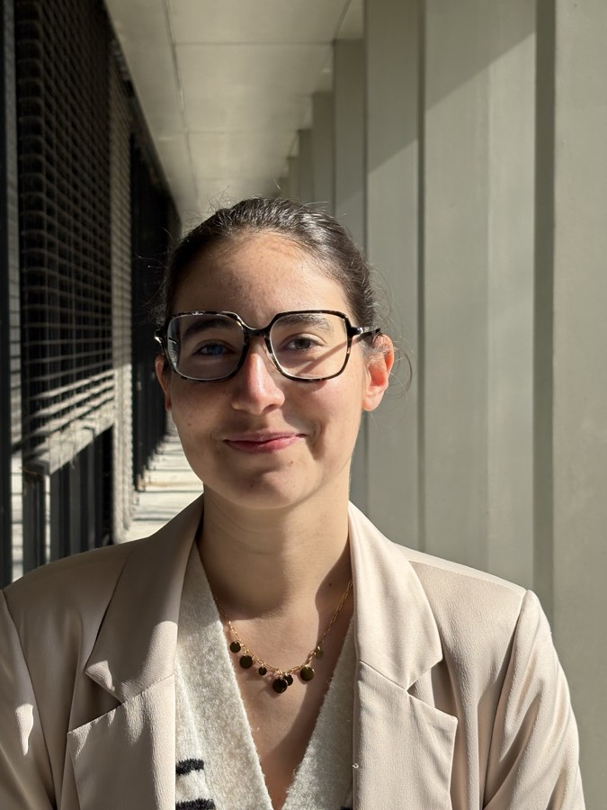
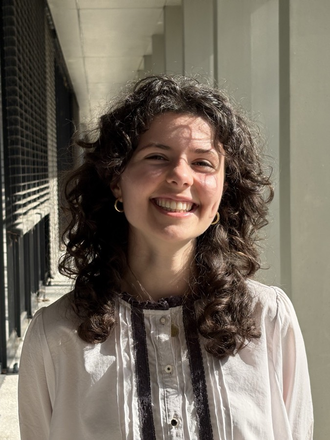
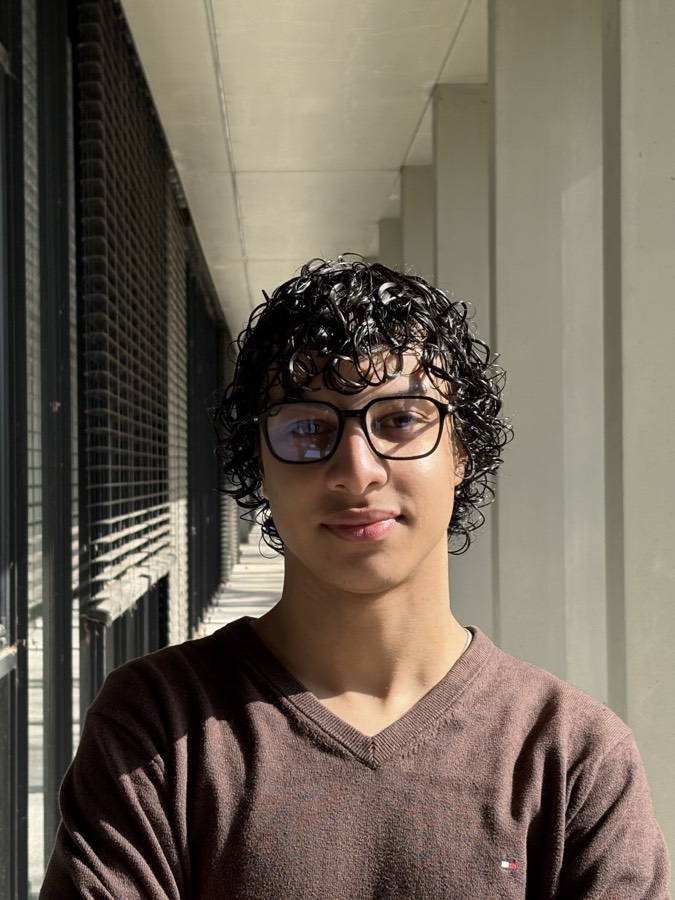
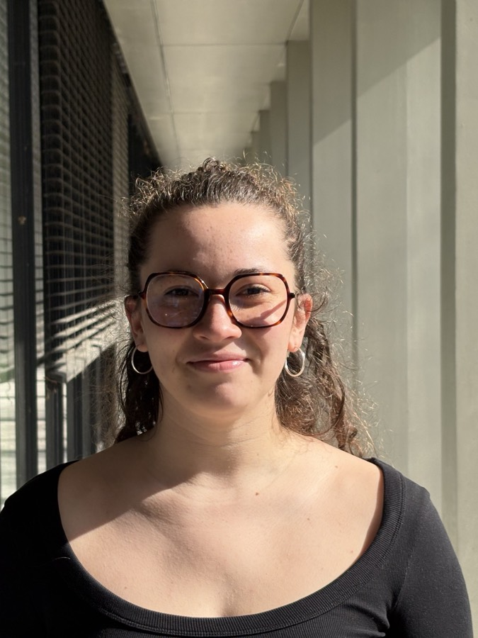
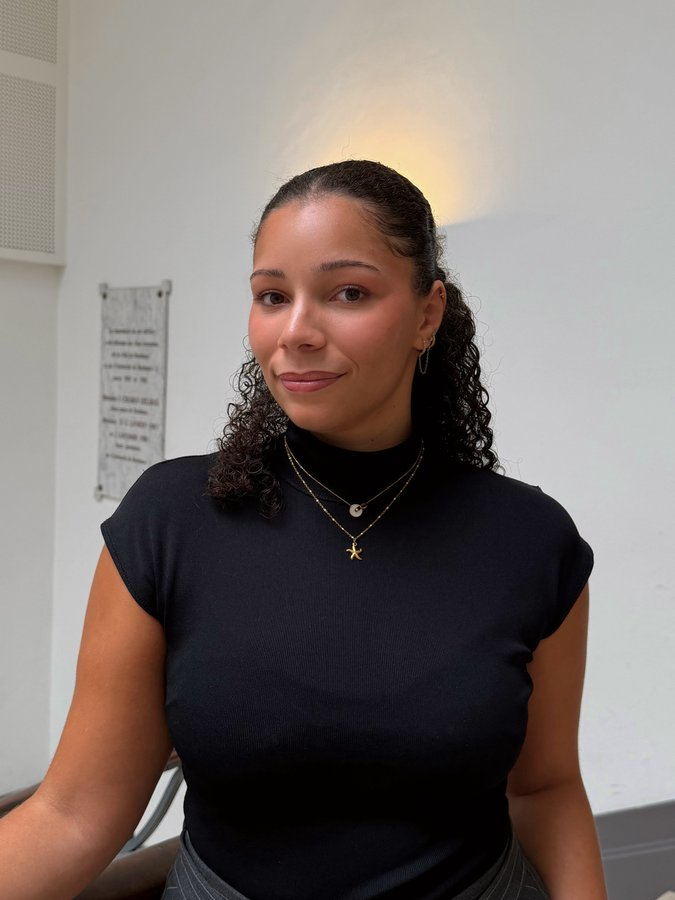
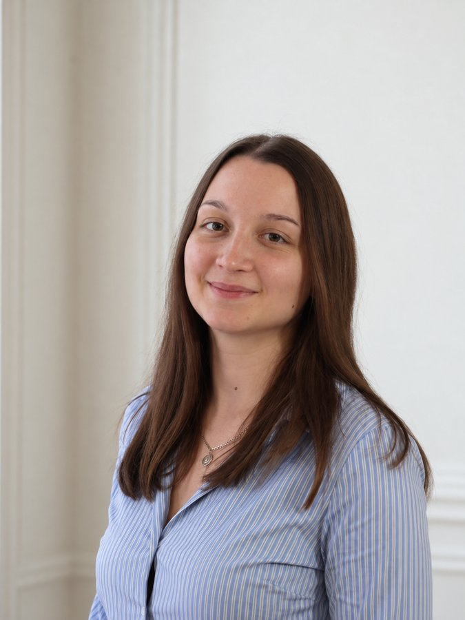
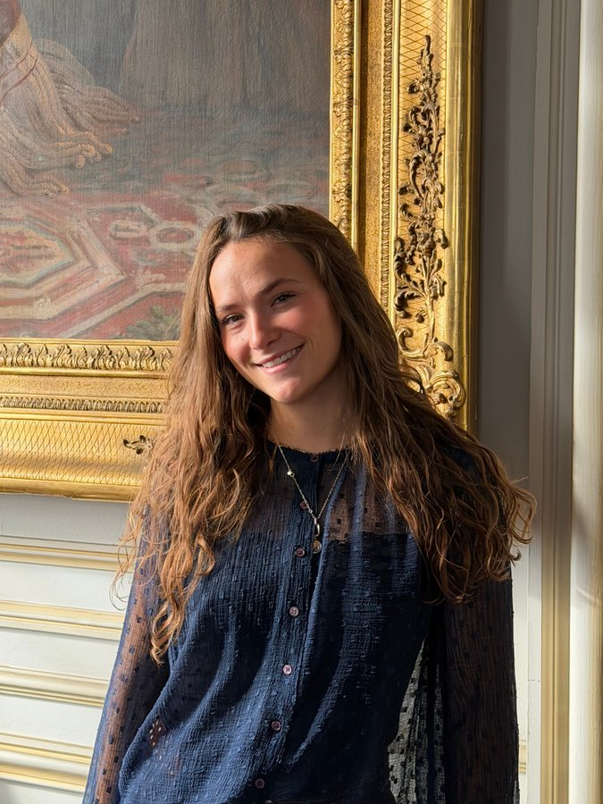
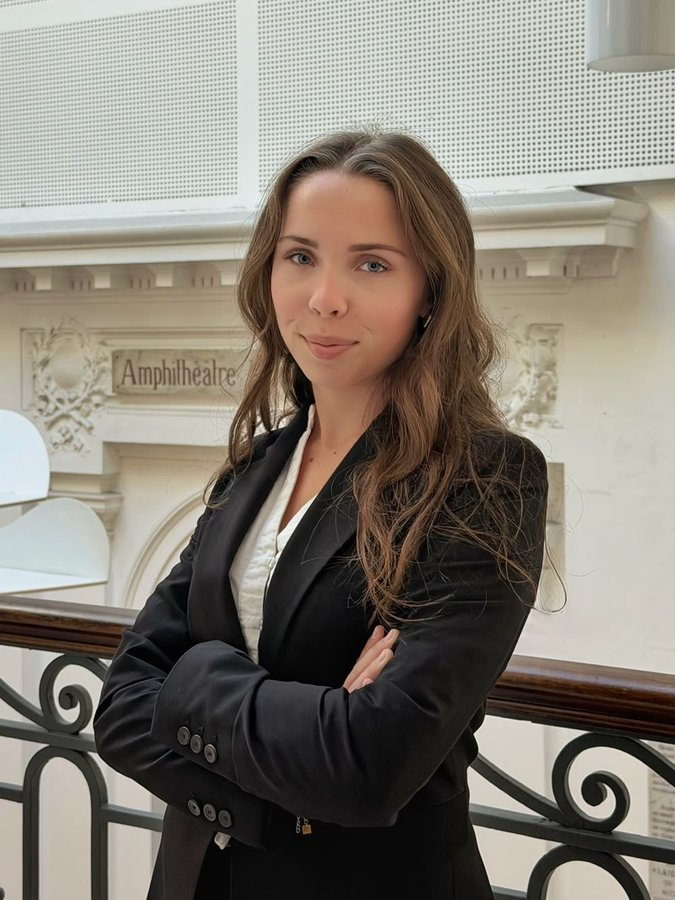

Qui sommes-nous ?
L'association LibredeDroit a été cofondée par Damien Audrerie et Maïlys Perry, alors qu'ils étudiaient tous deux le droit à la faculté de droit et de science politique de Bordeaux. Elle est née de deux convictions : lutter contre les violences sexistes et sexuelles de leurs causes à leurs conséquences, en mobilisant les hommes et les femmes.
Aujourd'hui composée d'une quinzaine de bénévoles, d'avocats et d'avocates partenaires, ainsi que de psychologues partenaires spécialisés dans les violences, l'association LibredeDroit œuvre chaque jour sur le terrain pour sensibiliser le grand public, et accompagner les victimes.
La direction
Damien Audrerie
Cofondateur et président

Zoé Labrot
Directrice générale
Un combat qui nous concerne toutes et tous.
Tout le monde est concerné
Les violences sexistes et sexuelles touchent des personnes de tout âge, de tout genre, et de tout milieu. Elles sont verticalement et horizontalement, présentes dans toute la société.
Au-delà des clivages
Lutter contre ces violences est l'affaire de toutes et tous, dépasse les clivages politiques, et appelle à se rassembler autour d'une meilleure prévention, protection et accompagnement des victimes.
Aucune victime exclue
C'est pourquoi LibredeDroit s'adresse à toutes les victimes, en prenant en compte leurs différences, sans jamais exclure qui que ce soit.
Agir directement sur le terrain
L'association LibredeDroit revendique une action de terrain, car pour comprendre la complexité des violences, il faut y être confronté. Nos actions auprès des victimes tout au long des procédures judiciaires nous permettent de sensibiliser le grand public avec les nuances et les précisions que ces violences nécessitent.
L'indépendance
Association loi 1901 portée par des bénévoles, libre de ses positions et de ses moyens d'agir. Nous ne sommes associés à aucun mouvement politique ou idéologique.
La direction
Damien Audrerie
Cofondateur et président
Zoé Labrot
Directrice générale

Oriane Le Saëc
Membre du pôle sensibilisation
Kamelya Harouach
Membre du pôle sensibilisation

Yassine Myassal
Membre du pôle sensibilisation

Marie Gazeau
Membre du pôle aide victimes et sensibilisation

Maureen Simphor
Membre du pôle aide victimes et sensibilisation

Pauline Willem-Dupau
Membre du pôle sensibilisation
Lounes Belkacem
Membre du pôle sensibilisation
Lia Troadec
Membre du pôle sensibilisation

Clara Lamouroux
Membre du pôle sensibilisation

Emma Bauzerand
Membre du pôle communication
Soutenez notre action.
Chaque don finance l'accompagnement gratuit des personnes victimes de violences sexistes et sexuelles.
Faire un don ou adhérer à l'association
Paiement sécurisé via HelloAsso
Ce que permet votre don
- 50 €des plaquettes-outils pour le grand public
- 100 €deux séances chez un·e psychologue partenaire
- 200 €une partie des frais d'avocat·e